Meetings that remember.
An office that does the work.
Jarv-ish runs your meetings, remembers every decision and promise, briefs you an hour before the next call — and hands the follow-up work to your own AI office.
Runs in the browser · No app to install · Guests join with one link
One place for the whole meeting cycle
Most tools stop at the transcript. Jarv-ish covers what happens before the call, in the call, and everything that has to get done afterwards.
Before: you're briefed
Who's joining, what was decided last time, what's still open on both sides and what your office already prepared — emailed and spoken an hour before you join.
During: it just records
Built-in meeting rooms with recording, or the meeting agent joins your Google Meet as a clearly labelled participant. Nobody takes notes.
After: the work moves
Decisions, tasks and promises are extracted. Clients get a “What we agreed” page. Office-sized tasks go to your AI office with one click — and come back marked done by the agent.
Every meeting becomes a summary, a task list and a set of promises
Each meeting page shows the executive summary, transcript, tasks, decisions, risks, promises and suggested actions — connected in one view.
Step by step: create, join and analyse a meeting →From recording to action items, automatically
Once a meeting ends, the recording is transcribed and analysed. You get a short summary, the key points, and every task with its owner, due date and the exact sentence it came from.
- Executive summary and key points in minutes
- Tasks with owner, due date and confidence — approve or dismiss in one click
- Decisions, risks and follow-ups on their own tabs
- Downloadable report (.docx) and email-ready transcript
Summary → Tasks → Decisions → Promises, all from one recording
Instant Meetings, or your existing Google Meet
Schedule meetings in your own timezone, connect Google Calendar, and either host an Instant Meeting — a room inside Jarv-ish — or bring the transcript from a Google Meet. Either way it lands in the same place.
- Google Calendar sync and transcript fetch
- Instant Meeting from the dashboard — start a room right now, or schedule one
- Your assistant can join the call by name and answer questions out loud
- Live meeting network view of who meets about what
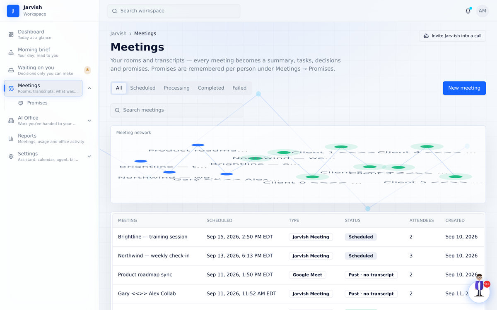
Walk in prepared. Walk out with nothing to chase.
This is the part other meeting tools skip — and the part that makes people trust you.
Step by step: briefs, promises and approvals →One email an hour before: your brief and the join link
Who's joining and how often you've met, what was decided last time, what you still owe them and what they owe you, plus anything your office prepared for this group. Read it, or press play and hear it in your assistant's voice.
- One email an hour before — reminder and preparation in one, join link inside
- Spoken script — listen while you grab a coffee
- Recurring meeting? The day before, Jarv-ish offers an agenda — and stays quiet when nothing is open
- “Email it to me now” from any upcoming meeting
A clean page for your clients — no transcript, no recording
After the meeting, review the recap and send a short page: the decisions, who does what by when, and a single question — “does this match what you heard?”. Attendees confirm or flag something without creating an account.
- You approve every line before it's sent
- Shows only what you chose to share
- Confirmations and flags come straight back to you
- Edit & resend at any time
Promises are remembered — per person
Every “I'll send that by Friday” from every meeting is kept, split into what you owe and what they owe, and carried into the next brief with that person. Mark them kept, or “doesn't apply”, and the record stays honest.
- “You owe / they owe / kept” per person, across all meetings
- Overdue promises surface in your morning brief
- Source sentence attached to every promise
- Internal colleagues who join every call never count as “the client” — memory stays per relationship
“Can’t make it?” without the email chase
Calendar tools hide a guest’s “propose a new time” from every app. Jarv-ish keeps the whole loop inside the invitation.
Guests pick from your free slots — in their own timezone
Every invitation, reminder and join page carries a personal link. It opens a page with your next free slots (Google Calendar free/busy plus your Jarv-ish meetings, inside your working hours), shown in the guest’s timezone. They tap one, or pick their own time, add a note and send. No account needed.
- Free slots spread across the next working days, never stacked on one morning
- Custom time with timezone picker as the fallback
- The proposal lands on the meeting page, in Waiting on you and in your inbox
Guest proposes → you press Accept → calendar updated, invitations re-sent, guest confirmed
Accept moves the meeting. Decline sends a note.
“Jordan proposed Friday 3:30 PM (8:30 PM for them)”. Accept re-times the meeting, patches your Google Calendar event, re-sends the invitation to everyone and emails the guest a confirmation. Decline takes an optional note and gives them a link to propose again.
- Two proposals for the same meeting? Accepting one retires the other
- Email deep-links straight to the right card
- Counted in the Waiting on you badge like any other decision
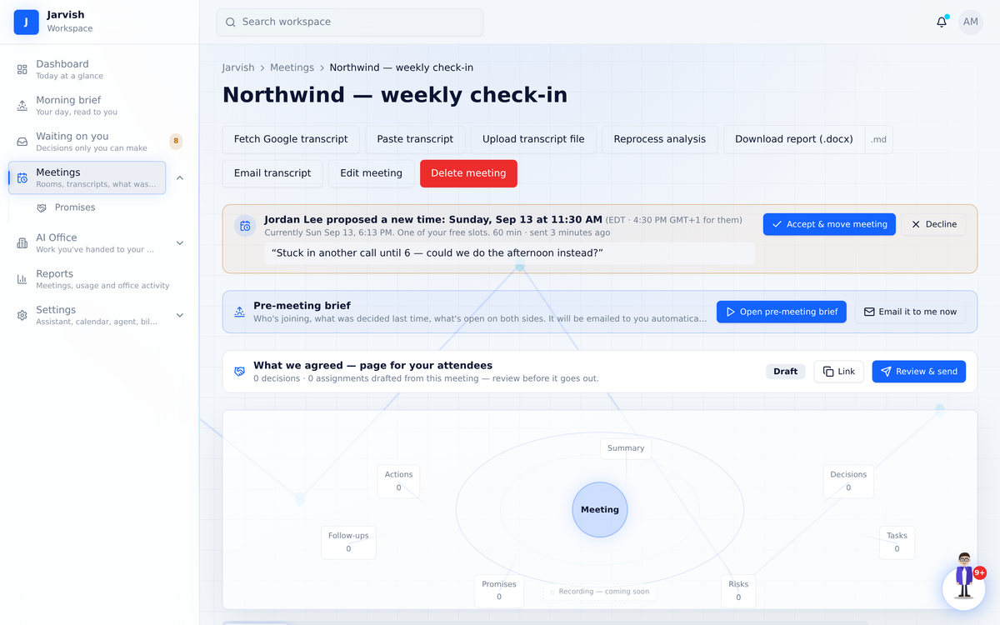
A meeting room that behaves the way people expect
One link, in the browser, on any device. Recording starts with the meeting and the transcript is waiting when it ends.
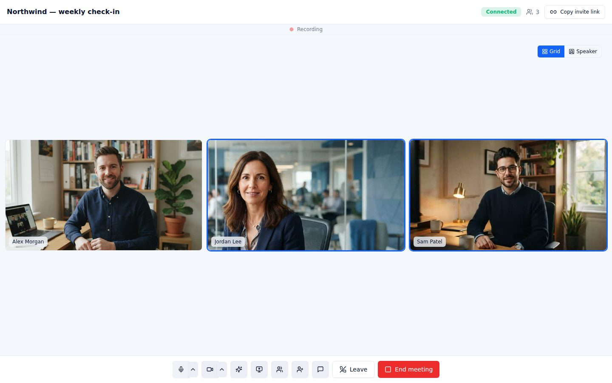
Grid or Speaker view
Everyone the same size, or whoever is talking fills the screen. Pin anyone with one click.
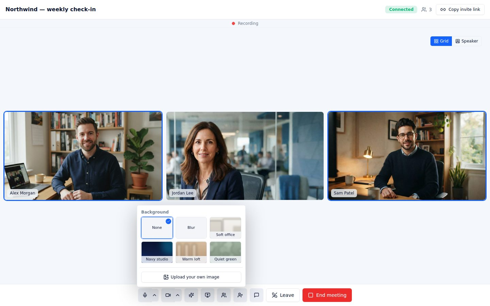
Blur & backgrounds
Blur your room, pick a built-in background or upload your own. Runs on your computer, applies to your camera instantly.
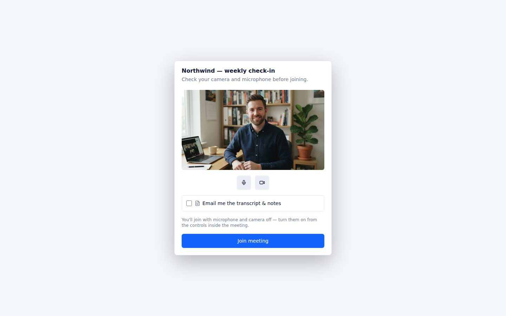
Check before you join
Camera preview, mic and camera toggles, and an optional “email me the transcript” for guests.
Switch mic, speaker or camera in the call
Change devices from the control bar without leaving. Your choice is remembered for the next meeting.
Reopen an ended room
Left by mistake? The host can reopen the room for 60 minutes and the same link works again for everyone.
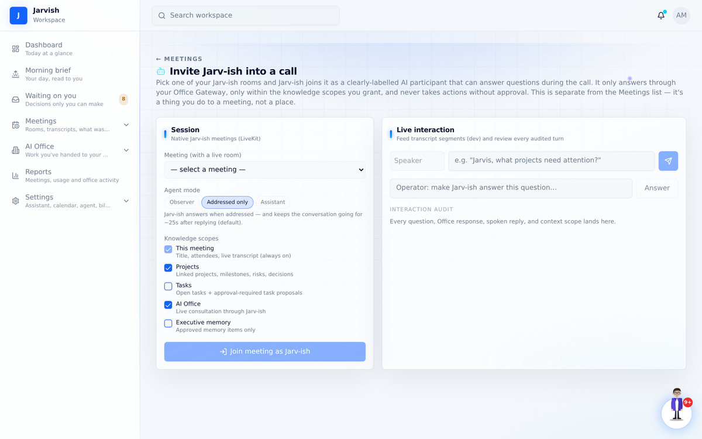
Your assistant, in the call
It says hello when it joins, answers when someone says its name — in your assistant's own voice — keeps the thread for follow-ups, and never acts without your approval.
Join by phone, share your screen, chat
Guests open the link on a phone browser — no app. Screen share becomes the stage; chat and participants panels are one click away.
The follow-up work gets done — by your own office
Jarv-ish is not just a note taker. Behind it sits an AI office: agents that take requests, do the work, and report back — from the approval queue, from chat, from voice.
One click from “waiting on you” to “an agent is on it”
Every task Jarv-ish pulls from a meeting is tagged: Office can do this · Ivy for deliverable work (a draft, a deck, research, a comparison) or Needs you for calls, decisions, signatures and payments. Press Approve & send to office and Jarv-ish writes the brief from what the meeting actually said, hands it to the agent, and tells you who has it.
- “Send 4 to office” handles every office-sized task at once; the human ones stay with you
- Edit & approve when the wording or priority needs a tweak first
- Nothing starts without your click — and the brief ends with “ask me one question instead of guessing”
You always know where the work is
The request lives under AI Office → Requests with its status and the full conversation. If the agent needs a decision or a detail, the request flips to Needs your input and appears in Waiting on you and your morning brief — one reply and it’s moving again. When it’s delivered, the task is marked Done by Ivy automatically.
- “With the office” while it’s out, “Done by Ivy” when it’s back
- Failed or cancelled requests hand the task back to you — nothing is lost
- Office not connected yet? You still get Approve, Edit & approve, Dismiss — and one line telling you what connecting unlocks
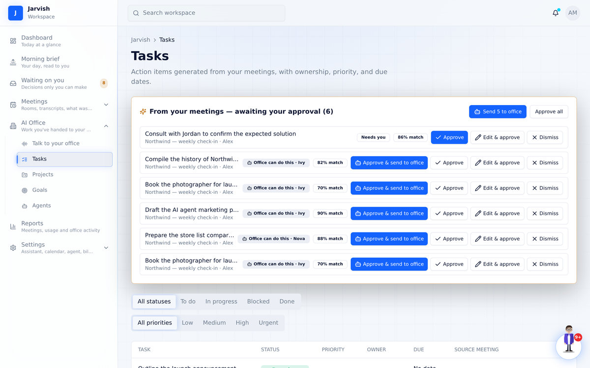
The first call of your day — with your own assistant
Two to four minutes, out loud: what's waiting on you and how much of it your office can take the moment you approve, today's meetings with the promises you owe those people, your office's status, last night's meeting, projects, goals — and where to start. Your assistant on one side of the screen, you on the other.
- “36 items are waiting for you. 16 I can hand to the office the moment you approve them.”
- Every number is a live count from your own workspace — sections with nothing to say are left out
- “Nova has been waiting 3 days for an answer on…” — so nothing stalls on you quietly
- Ends with one concrete first step, and the button pulses until you take it
Ask, delegate or hear your brief. Out loud.
One speech-to-speech conversation with your assistant: ask about your day, delegate a request, answer an agent’s question. Pick its name, language, voice and speaking style — the same voice reads every brief.
- Continuous or push-to-talk
- Voice and text share one office conversation
- Interrupt any time; history is kept
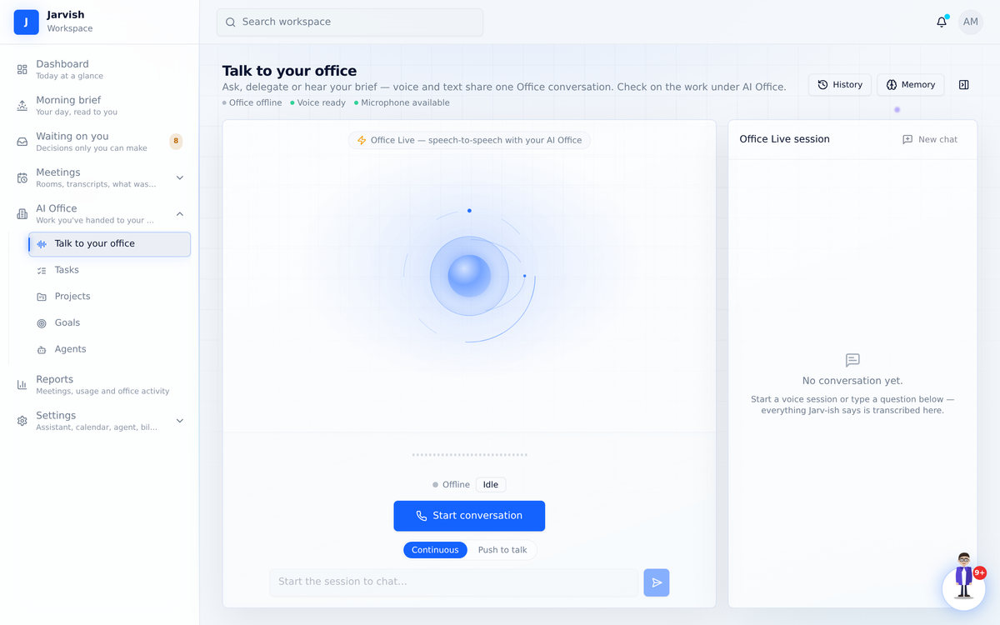
Tasks, projects, goals and reports — connected to the meetings they came from
Nothing lives in a silo. A task knows its meeting; a project knows its tasks and office work; a goal knows its projects.
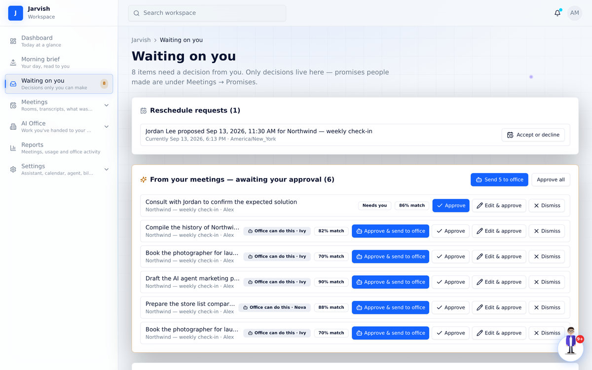
Waiting on you
Only decisions live here: task approvals with “Office can do this”, office questions, reschedule requests, plan sign-offs.
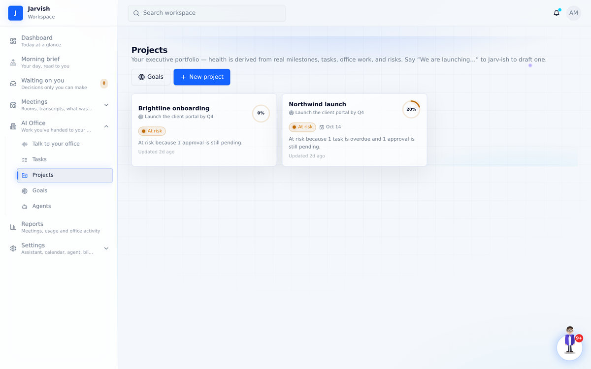
Projects
Health derived from real milestones, tasks, office work and risks — not a status someone typed.
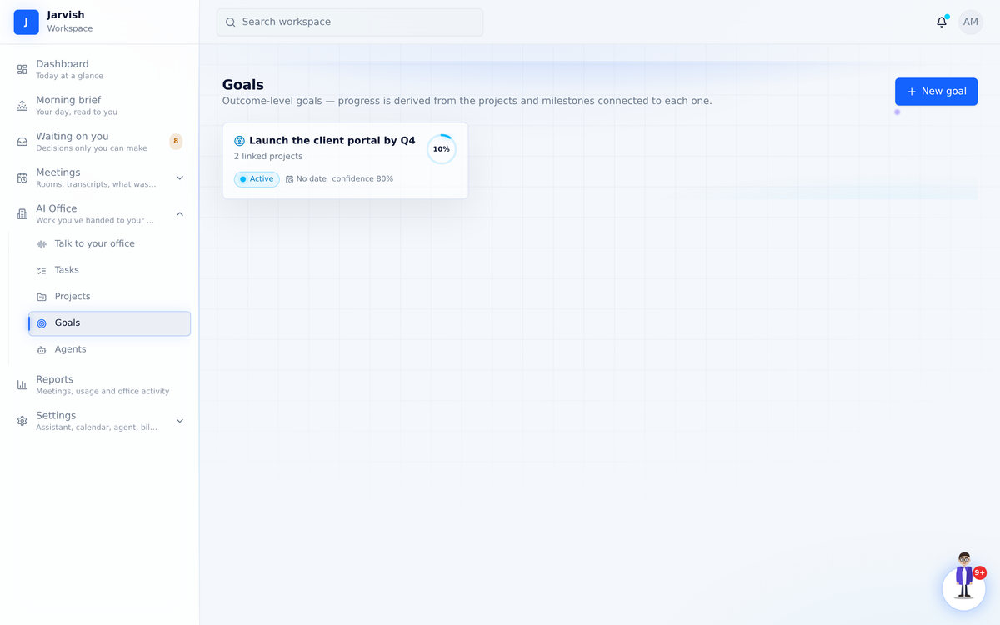
Goals
Outcome-level goals whose progress and confidence come from the projects linked to them.
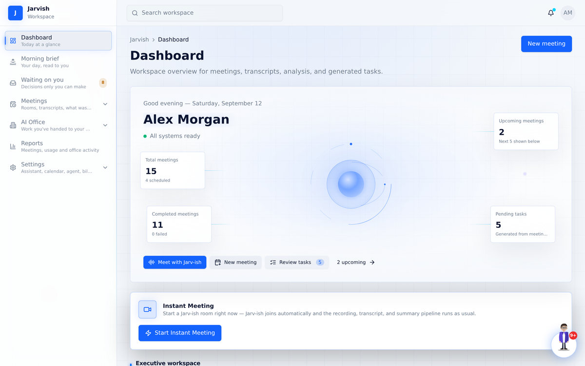
Dashboard
Upcoming meetings, pending tasks, recently processed — and an instant meeting button.
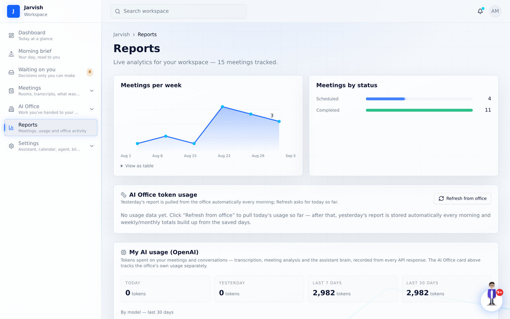
Reports
Meetings per week, status breakdown, and your AI and office usage — transparent, per agent.
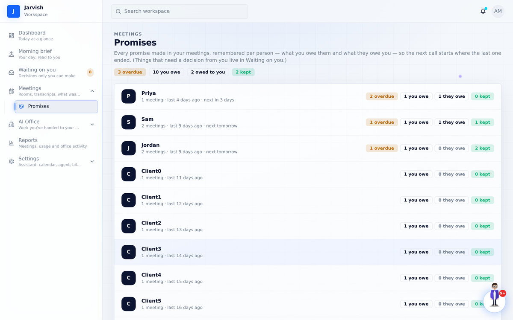
Promises
Every promise from every meeting, per person — what you owe them and what they owe you.
Set up in five short steps — including a sixty-second tour
Name your assistant and pick its voice, connect your calendar, connect your AI office (or skip it for now), take the tour of how work flows — meetings become tasks, one click sends work to your office, questions come back to you, delivered work is marked done — and get your first win. Welcome emails over the first three days show you what to try next.
Every feature, step by step, with the real screens
Twelve chapters, sixty-three screenshots and ten short videos: from creating your account to handing work to your office and hearing your morning brief. Nothing is a mock-up — it is the product.
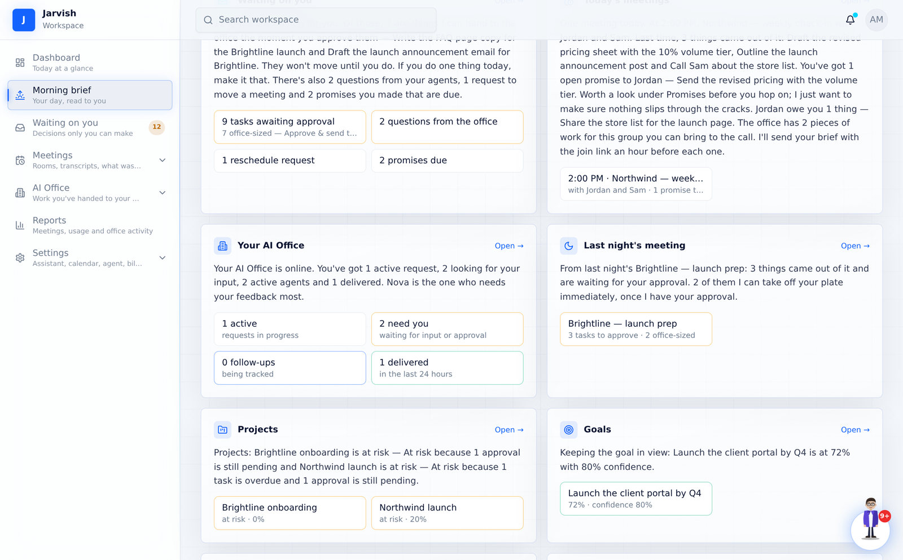
Simple plans. Your data and settings stay put when you switch.
Every plan includes meetings, transcripts and AI analysis, the voice assistant, tasks, projects and goals.
Connect
Bring your own agent.
- Meetings, transcripts & AI analysis
- Voice assistant + meeting agent
- Tasks, projects & goals
- Connect your own deployed agent
- AI Office runs on your gateway
- No managed agent included
Jarvish
One general skilled agent, managed for you.
- Everything in Connect
- 1 general skilled agent included — no setup
- Delegate work from chat or voice
- Morning brief email every day
- Your own AI usage reports
- Single agent — no multi-agent office
Jarvish + Office
A full AI office working for you.
- Everything in Jarvish
- Full AI Office — up to 20 agents or 7 swarms
- Specialist agents & agent roster
- Office token usage reports per agent
- Priority support
Want people as well as software?
Every plan above works on its own. These are for teams who would rather hand over the set-up — or the strategy — than work it out themselves. Add any of them to any plan.
Managed & reported
We run Jarv-ish for you. Your agents stay healthy, the office keeps moving, and once a month you get a plain-English report instead of a dashboard to interpret.
- Ongoing monitoring and maintenance
- Problems fixed before you notice them
- Monthly report: what shipped, what stalled, what we’d change
Agent set-up
Send us your agent guide and we build the office from it — roles, instructions and permissions — then test it against your real work before you ever touch it.
- Built to your agent guide
- Roles, prompts and permissions configured
- Tested on your workflows before handover
Set-up + growth strategy
Everything in Agent set-up, plus the part no software can do for you: deciding what to point it at. Vin took ButcherBox from $0 to $650M — you get that playbook applied to your business, not a generic deck.
- Everything in Agent set-up
- Growth strategy built around your numbers
- The $0 → $650M ButcherBox playbook, applied to you
Not sure which one you need? Message us and we’ll tell you honestly — including if the answer is none of them.
WhatsApp +1 (860) 268-2554
· Call +1 (860) 268-2554
Questions people ask
Do my guests need an account?
No. They open the meeting link in a browser — on a laptop or a phone — type their name and join. If they want the transcript, they can tick a box before joining.
What do clients see on the “What we agreed” page?
Only what you approved: the decisions and who does what by when. Never the transcript or the recording. They can confirm it matches their notes or flag something, without signing up.
When does the pre-meeting brief arrive?
One hour before the meeting, by email, with the join link inside it and a button to play it — it is your reminder and your preparation in one message. For recurring meetings, the day before, Jarv-ish offers a suggested agenda when something is actually open; when nothing is, it stays quiet.
Can Jarv-ish talk in the meeting itself?
Yes. Invite it into an Instant Meeting and it joins as a clearly labelled AI participant with your assistant's name, voice and personality. It greets the room, answers when someone says its name (then keeps the thread for follow-ups), asks a question back when something is unclear — and never takes an action without your approval. Observer mode keeps it silent and just listening.
Where can I see how everything works?
The complete guide walks through every feature with real screens and short videos — setting up, meetings and the room, briefs, promises, approvals, rescheduling, the AI Office, the morning brief, tasks, projects and settings.
Does the background blur work on video?
Yes — it is applied to your live camera feed on your computer before it's sent, so everyone sees it. Works best in Chrome or Edge on a computer.
What is the AI Office?
A set of agents that do deliverable work — research, outlines, decks, comparisons — from requests you make in chat, by voice, or straight from a meeting's task list. On the Connect plan it runs on your own agent gateway; the Jarvish plan includes a managed agent; Jarvish + Office adds a full multi-agent office.
How does Jarv-ish decide a task is “office work”?
By rule, not by guesswork. Anything only a person can do — call or meet someone, decide, approve or sign, pay, visit, hire, “check with X” — is marked Needs you. Deliverable work — draft, write, research, compare, outline, compile, a deck, a proposal, pricing — is marked Office can do this, with the agent whose past work looks most similar. Nothing is sent until you press the button.
What if a guest proposes a time in Google Calendar instead?
Google keeps those proposals inside Google and doesn’t expose them to any app, so Jarv-ish can’t see them. That’s why every Jarv-ish invitation carries its own “propose another time” link — proposals made there land on the meeting page, in Waiting on you and in your inbox, with Accept and Decline.
Can I switch plans later?
Yes. Your data and settings stay exactly as they are; upgrades apply within a minute of checkout.
Your next meeting could be the last one you take notes in.
Create a workspace, name your assistant, and get a brief for your next call.